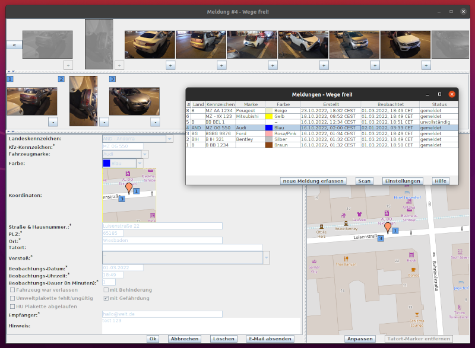
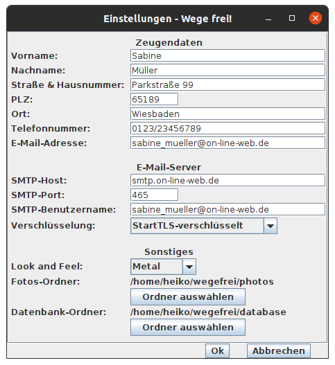

Wege-frei! ist ein Programm für den PC/Mac/Raspberry Pi/Desktop/Laptop, um Falschparker_innen zu melden. Die Idee zu diesem Projekt basiert auf der Wegeheld-App und der Weg.li-Website.

Alle Daten (Beweisfotos und Meldungen) werden auf dem eigenen PC gespeichert. Der Versand erfolgt über das persönliche E-Mail-Postfach direkt an das zuständige Ordnungsamt. Hierdurch ergibt sich ein Geschwindigkeitsvorteil und im Sinne der Datensparsamkeit werden die Daten nicht durch zusätzliche Dienstleister verarbeitet. Das Layout und Look & Feel ist flexibel an die Bedürfnisse der Anwender_in anpassbar. Die einzelnen Komponeten wie Bildbetrachter, Karte, Eingabe-Formular, Adressbuch und E-Mail-Client sind eng verzahnt und reagieren direkt ohne lange Verzögerung.
Smartphones und Tablets (Android, iOS & iPadOS) werden nicht unterstützt.
Am einfachsten ist die Verwendung eines Software-Paketes, abhängig vom Betriebssystem und Prozessor/CPU-Familie (.msi, .pkg oder .deb-Datei). Dieses enthält eine Java 17 Runtime.
Sollte es (noch) kein Paket für Deine Plattform (Betriebssystem & CPU) geben,
dann schreibe mich bitte an oder verwende die plattformunabhängige .jar-Datei.
Zur Ausführung der .jar-Datei, welche Java Byte Code enthält,
wird zusätzlich eine Java Virtual Machine ab Version 17 benötigt.
z.B. Amazon Corretto.
Start mit dem Kommando java -jar wegefrei-1.0.3.jar.
Die Software kann über den Betriebssystem-spezifischen Paket-Manager wieder deinstalliert werden.
Die Konfigurationsdatei .wege_frei_v1_x_x.settings.json
und die Datenbankdateien
wege_frei_v1_x_x.mv.db & wege_frei_v1_x_x.trace.db,
welche standardmäßig im Benutzer-Home-Verzeichnis liegen,
müssen manuell gelöscht werden.
Nach der Installation kannst du direkt Meldungen erfassen. Bevor Du Meldungen an das Ordnungsamt übertragen kannst, musst Du Deine Zeugen-Daten angeben. Annonyme Anzeigen werden nicht akzeptiert. Außerdem werden die Konfigurations-Daten eines Postausgangs-Servers (SMTP) benötigt.

Die Software verwendet Web-Services/APIs. Bei der Benutzung wird Deine IP-Adresse daher an folgende Websites übermittelt:
Bei Nutzung des Internets wird Deine IP-Adresse natürlich auch an den Internet-Zugangs-Provider übermittelt und beim Versand von E-Mails an den E-Mail-Provider.
Heiko Zelt, Uhlandstraße 16, 65189 Wiesbaden, 01 57/30 62 60 35, hz (ät) heikozelt (punkt) de
Quellcode: GitHub-Repo